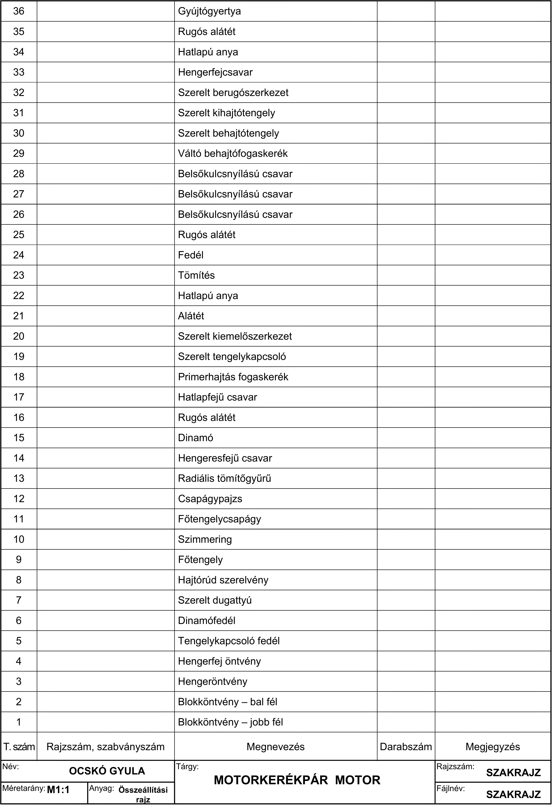

T. szám Rajzi Név: Méretarány: Ml :1 Rajzszám, szabványszám OCSKÓ GYULA Gyújtógyertya Rugós alátét Hatlapú anya Hengerfejcsavar Szerelt berugószerkezet Szerelt kihajtótengely Szerelt behajtótengely Váltó behajtófogaskerék Belsőkulcsnyílású csavar Belsőkulcsnyílású csavar Belsőkulcsnyílású csavar Rugós alátét Fedél Tömítés Hatlapú anya Alátét Szerelt kiemelőszerkezet Szerelt tengelykapcsoló Primerhajtás fogaskerék Hatlapfejű csavar Rugós alátét Dinamó Hengeresfejű csavar Radiális tömítőgyűrű Csapágypajzs Főtengelycsapágy Szimmering Főtengely Hajtórúd szerelvény Szerelt dugattyú Dinamófedél Tengelykapcsoló fedél Hengerfej öntvény Hengeröntvény Blokköntvény - bal fél Blokköntvény - jobb fél Megnevezés C Tárgy: MOTORKERÉKPÁR MOTOR Darabszám Megjegyzés Rajzszám: SZAKRAJZ Fájlnév: SZAKRAJZ
